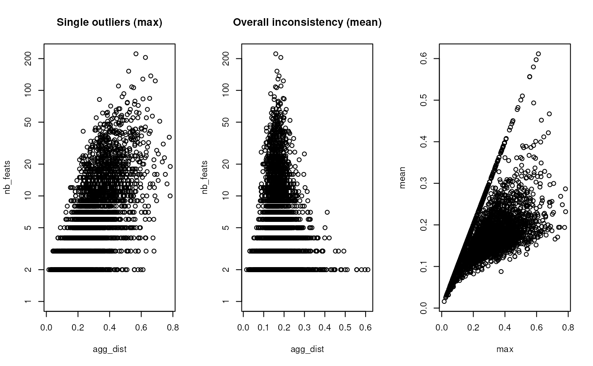

This function evaluates the variability within all protein group
of an MSnSet. If a protein group is composed only of a
single feature, NA is returned.
Value
A matrix providing the number of features per
protein group (nb_feats column) and the aggregation
summarising distance (agg_dist column).
Details
This function can be used to identify protein groups with
incoherent feature (petides or PSMs) expression patterns. Using
max as a function, one can identify protein groups with
single extreme outliers, such as, for example, a mis-identified
peptide that was erroneously assigned to that protein group. Using
mean identifies more systematic inconsistencies where, for
example, the subsets of peptide (or PSM) feautres correspond to
proteins with different expression patterns.
See also
combineFeatures to combine PSMs
quantitation into peptides and/or into proteins.
Examples
library("pRolocdata")
data(hyperLOPIT2015ms3r1psm)
groupBy <- "Protein.Group.Accessions"
res1 <- aggvar(hyperLOPIT2015ms3r1psm, groupBy, fun = max)
res2 <- aggvar(hyperLOPIT2015ms3r1psm, groupBy, fun = mean)
par(mfrow = c(1, 3))
plot(res1, log = "y", main = "Single outliers (max)")
plot(res2, log = "y", main = "Overall inconsistency (mean)")
plot(res1[, "agg_dist"], res2[, "agg_dist"],
xlab = "max", ylab = "mean")
